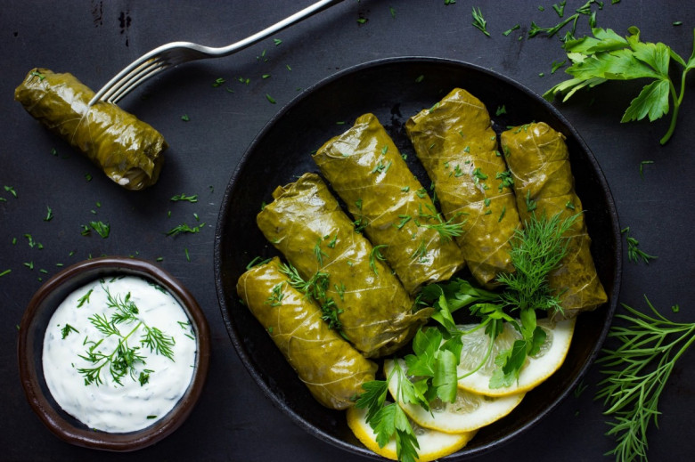

Ингредиенты:
- Фарш (говядина или баранина) — 400 г
- Рис — 120 г
- Лук — 2 шт.
- Виноградные листья — 30–40 шт.
- Зелень (кинза, укроп) — по вкусу
- Растительное масло — 2–3 ст.л.
- Соль, вода — по вкусу
Специи:
- Черный перец — по вкусу
- Красный перец — по вкусу
- Соль — по вкусу
- Лавровый лист — 1 шт.
Приготовление:
- Рис отварить до полуготовности.
- Смешать фарш, рис, лук, зелень и специи.
- Завернуть начинку в виноградные листья рулетиками.
- Сложить в кастрюлю, залить водой, накрыть крышкой, тушить 40–50 минут.
- Подавать горячей, при желании полив маслом.
Пищевая ценность (~250 г):
- Калории: 380 ккал
- Белки: 18 г
- Жиры: 16 г
- Углеводы: 35 г
- Клетчатка: 3 г
← Назад